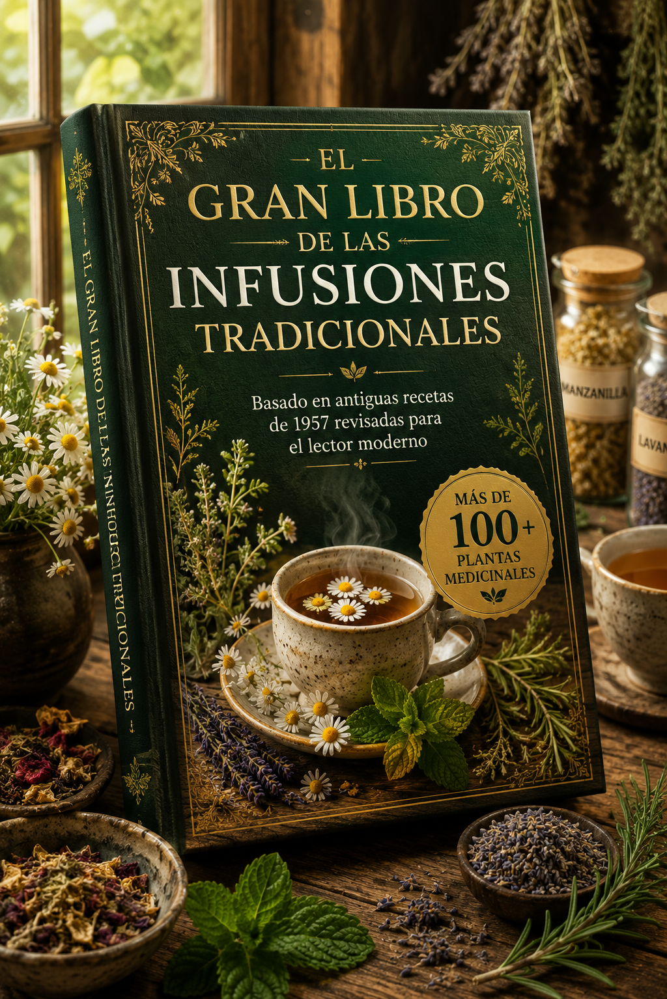

Descubre los beneficios de las plantas medicinales, aprende a preparar infusiones correctamente y disfruta de recetas tradicionales explicadas paso a paso.
⭐⭐⭐⭐⭐ Miles de lectores satisfechos.

Conoce las propiedades de más de 100 especies tradicionales.
Aprende la temperatura, el tiempo y la forma adecuada de preparar cada infusión.
Explicaciones claras, organizadas y aptas para principiantes.
Descubre cómo incorporar las infusiones a tu rutina diaria.
Una colección completa de recetas tradicionales organizadas por plantas y beneficios.
Conoce las propiedades, usos tradicionales y recomendaciones de cada planta.
Aprende cuándo una infusión no debe utilizarse y las precauciones más importantes.
Cantidad, temperatura del agua, tiempo de infusión y consejos para obtener mejores resultados.
Si estás comenzando en el mundo de las plantas medicinales.
Ideal para quienes buscan alternativas naturales para el bienestar.
Recetas sencillas para incorporar las infusiones a la rutina diaria.
Guía rápida de las plantas medicinales más utilizadas.
Tabla completa de preparación de infusiones.
Calendario recomendado para el consumo de infusiones.
"Excelente contenido. Muy fácil de leer y muy completo."
María G."Ahora preparo mis infusiones correctamente gracias a este libro."
Carlos R."El mejor ebook sobre plantas medicinales que encontré."
Lucía M.Queremos que realices tu compra con total tranquilidad. Tu pago está protegido por la plataforma Kiwify. En caso de que el producto cuente con garantía, podrás solicitar el reembolso dentro del plazo establecido por la plataforma. Nuestro equipo estará disponible para ayudarte siempre que lo necesites.
Sí. Después de confirmar el pago, recibirás acceso inmediato.
PDF compatible con celular, tablet y computadora.
No. El libro está pensado para principiantes.
El contenido fue organizado para ofrecer una consulta rápida y práctica sobre las infusiones tradicionales.
Obtén acceso inmediato al El Gran Libro de las Infusiones Tradicionales y comienza a descubrir los beneficios de las plantas medicinales.
QUIERO MI EBOOKAcceso inmediato • Pago seguro